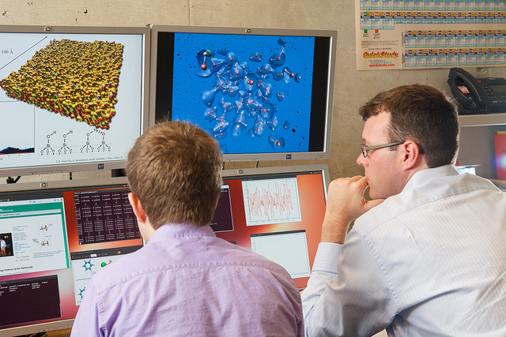
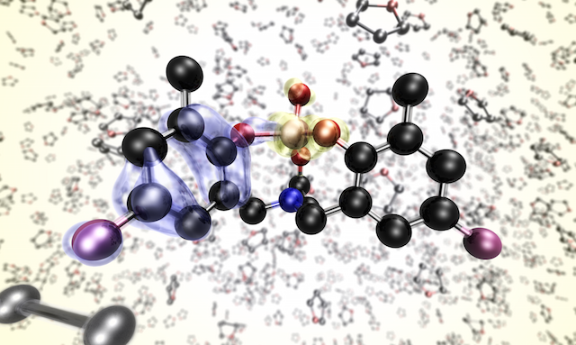
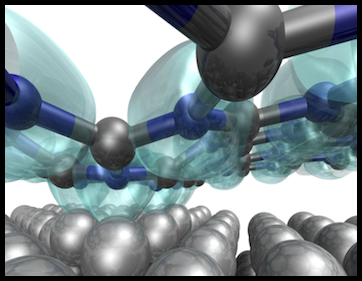
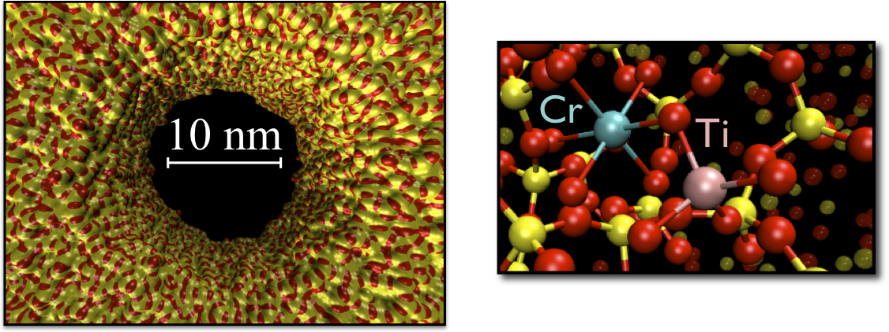
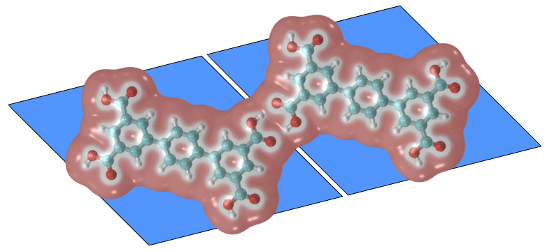

|  |  |
Machine Learning for Advanced Materials
| Using a combination of theoretical tools (multi-scale modelling), our group is exploring and designing advanced materials. Our goal is to make materials that are, in the words of Mervin Kelly, "better, cheaper, or both".
To do this, we are developing deep learning methods which can rapidly approximate the properties of materials based on first principles training data. Ultimately, our goal is to develop a model which is transferrable, generalizable, reliable, and scalable. Transferability means that the network is able to accurately predict properties for structures which it has not observed during training. Generalizability means that the approach can be used for arbitrary observables, and that it is not sensitive to the details of the physical system to which it applies. For example, we would like to be able to work with fluids, continuum models, and atomistic systems using the same basic methodologies, model architectures, and training protocols. By reliable, we mean that the model is able to provide accurate estimates for a property, and, perhaps more importantly, provide the user with a warning or signal when it is uncertain. In our experience, neural networks are much better at interpolating than extrapolating. We have found that whenever a model has difficulty with a particular configuration (i.e. the error is high), the configuration is far away from the training set (in weight space). In practice, one obviously would not have access to the “ground truth” value, therefore a reliable model should be able to signal not only its prediction, but also a measure of confidence. The final property, scalability, relates to the extent to which the computational cost of evaluating the model can be distributed (e.g. across nodes in a cluster or multiple GPU). Our latest approaches are generalizable, scalable, and transferrable. Their reliability can be ensured through a GAN-like training procedure
Recent articles
|
 |
Ab initio electrolysis
Given the ubiquity of electrochemistry as an analytical and industrial tool, the importance of developing a fully first principles description of this system cannot be overstated.
At the same time, the complexity of the problem poses a significant obstacle to the development of an accurate atomistic description.
Obtaining the correct physical picture will require the union of several areas of theory.
A complete treatment will require an accurate description of the electrode-solution interface, both in terms of local geometry and electronic structure.
Methodological development will be important in this field.
Recent articles |
Artificial Photosynthesis
|  |
Light from the sun provides an unlimited supply of energy. Our challenge is to harness this energy in an efficient and scalable manner. Using metal-to-metal charge transfer complexes as light absorbers, an integrated, inorganic device shows promise for applications in water splitting and CO2 sequestration. Through computational modelling, we aim to elucidate electronic processes which occur on the nanoscale, with the ultimate goal of improving efficiency and durability.
Recent articles |
Networks and self assembly
|  |
Organic-metallic interfaces offer the possibility of novel next-generation photovoltaic devices.
Producing these devices reliably and cheaply poses many challenges, however.
Understanding and controlling self-assembly processes is an important aspect of the realization of this technology. Interestingly, this work has recently spun off in a very different direction: Online social Networks. See our open source tool, #k@ (http://hashkat.org), for more information.
Recent articles |